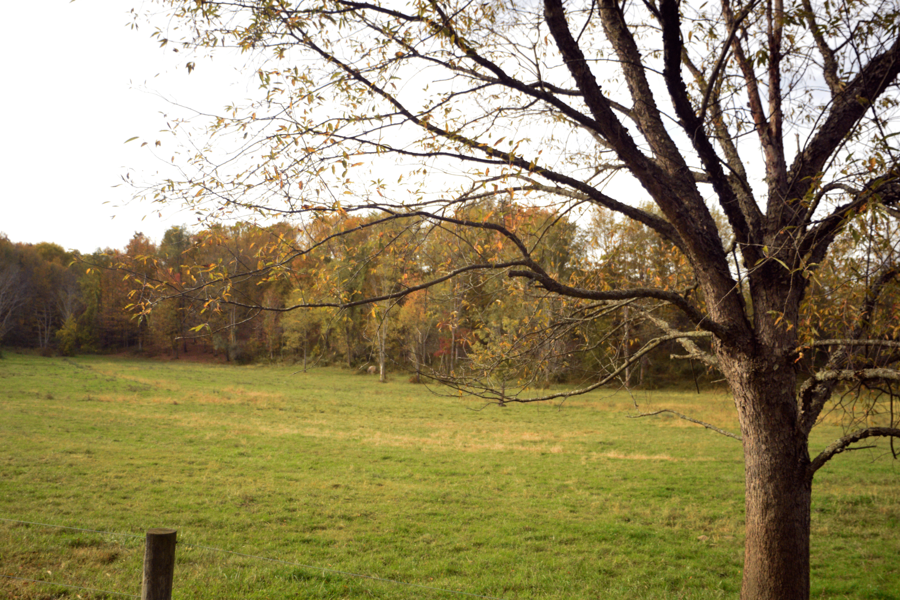
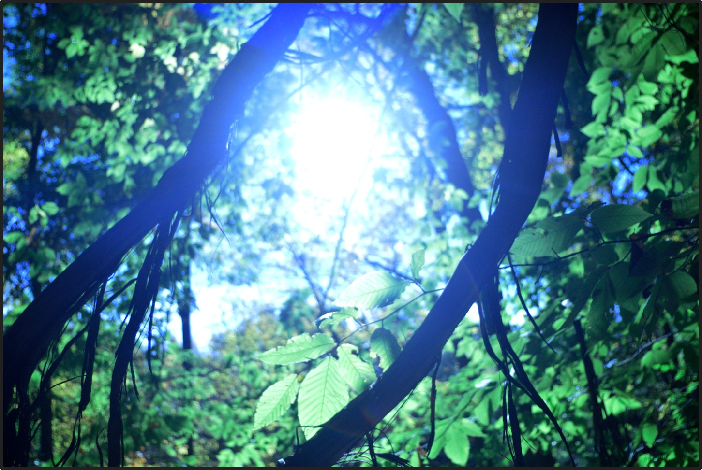
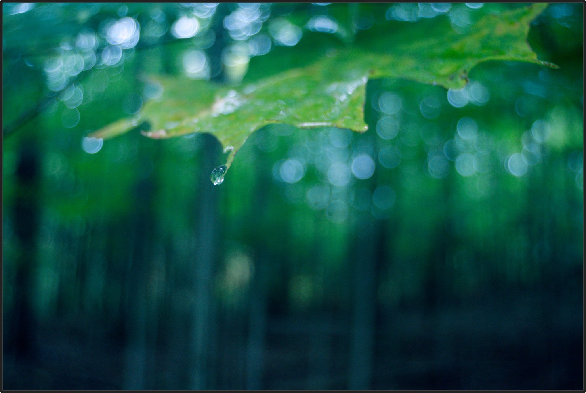

Welcome to Trent Moraeu's La Galarie Elegante et Authentique. Take a look at the exciting and perplexing, hell, maybe even tear jerking photography of Trent Moraeu. Dare you look at his magnificent pictures, you might just explode.

This photo is of a tree. It sways with the wind, but its roots keep it grounded. This is a metaphor for something. If you look at the photo more, you just might find out what it is.
This photo was taken at North Star Orchards while I was riding on a trailer. For a shot that was taken while in motion its actually balanced really nicely.

This lens flare is electrifying, isn't it? That's because this photo uses real sunlight. You're getting real Vitamin D right now.
This photo was taken near Wolfspeed Deliveries. I didn't know how to do lens flairs so I tried it for a few photos until I got this one. For some reason it also kind of looks like the sun is staring at you while the vines are taking you over.

Check out this leaf, its got a rain droplet and its falling off. How does one even take a picture of that? My above-average reflexes caught it, of course, I saw it falling off the leaf and I got out my camera just as it was leaving. Thats how fast I am.
This photo was taken on Suny Poly Campus. It started to rain while I was finishing up my photography assignment, and I thought it'd be cool if I got a photo of a raindrop falling off the leaf. Its definitely really hard, but if you are patient and line up a shot beforehand you can use multishot as it drips off the leaf.